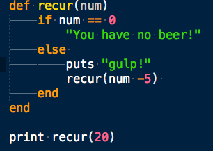
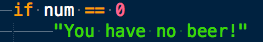
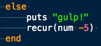
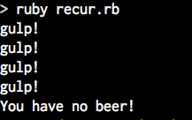
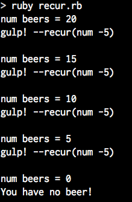

Re-cursion
Define a function that calls itself in the body of the function.WHat?!
Advantages
Simplicity
Code is shorter and more elegant
Great for iterative branching
Disadvantages
Disadvantage: might be expensive memory wise
Iteration is faster
My silly example
1.Optionally divide the problem it into smaller instances of itself.

2. Solve smaller pieces
2b. Make a base case of condition so that you do not make an infinite loop.
if (condition) ...do something

call function with modified argument
else do something and call function

3. Optionally collect small pieces for final solution. ex. factors of 30 => [2, 3, 5, 6, 10, 15]
Terminal output:
Our function will call itself until num == 0

More terminal output:
Each time we gulp we drink 5 beers, we have a big mouth.

Posted by: Shakrah Yves Date: 8/15/14